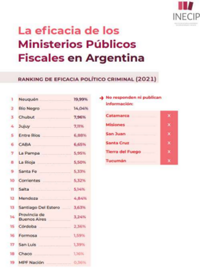

Resumen
El presente trabajo busca relacionar, tanto desde lo académico como desde la experiencia personal, cuál es el rol que cumple el Ministerio Público Fiscal en el desarrollo de un sistema democrático en la República Argentina, el cual se encuentra cumpliendo 40 años desde su recuperación y permanencia. Asimismo, encontramos la necesidad de concientizar tanto al ámbito estudiantil de la Facultad de Derecho como al público en general respecto de la importancia del sufragio consciente en relación a su impacto con la política criminal estatal, en la cual el Ministerio Público resulta el principal garante de su efectivización.
Introducción
La finalidad perseguida es poder mostrarle al receptor, a través de nuestra experiencia personal y académica, cuál es la importancia del sufragio consciente en el marco de 40 años de democracia y siendo el presente año de elecciones presidenciales en nuestro país en relación con el funcionamiento del Ministerio Publico Fiscal.
Se busca brindar una mirada subjetiva sobre todo lo visto y aprendido durante la etapa de prácticas profesionales en el Ministerio Público, en miras de concientizar y hacer reflexionar a los lectores respecto de la democratización de la política criminal estatal y su impacto en la resolución de conflictos penales.
Con la utilización de la metodología cualitativa y quantitative llegaremos a la conclusión de que se observa una gran falta de conocimiento por parte de la sociedad sobre el funcionamiento del Ministerio Publico Fiscal y la influencia del sistema democrático de un Estado de Derecho en la resolución de conflictos penales.
No queremos dejar de agradecer a la Fiscal Dra. Laura Rousselle, jefa de fiscales de la Unidad Fiscal de Violencia de Género quien muy amablemente nos permitió realizar nuestras prácticas en su dependencia y compartió sus conocimientos y preocupaciones respecto del tema protagonista del presente trabajo.
Objetivos
- General: evaluar el impacto del sufragio consciente en el fortalecimiento de la democracia y en la calidad del funcionamiento del Ministerio Público Fiscal.
- Específicos:Investigar el funcionamiento del Ministerio Público Fiscal en Argentina y su papel en el sistema democrático.Compartir desde la experiencia personal, cómo resulta el funcionamiento del Ministerio Público.Compartir datos estadísticos resultantes de la investigación realizada por el Instituto de Estudios Comparados en Ciencias Penales y Sociales (INECIP).
Desarrollo
Algunas aproximaciones útiles
Según expresa el art. 1 de la Ley Orgánica del Ministerio Público- Ley N° 8.008- de la Provincia de Mendoza:
“El Ministerio Público Fiscal es un órgano independiente que conforma y desarrolla sus funciones en el ámbito del Poder Judicial, que tiene por función promover la actuación de la justicia en defensa de la legalidad y de los intereses generales de la sociedad, con atribuciones orgánicas, autonomía funcional, financiera y presupuestaria.
Administrará su propio presupuesto rindiendo cuentas en forma directa al Tribunal de Cuentas de la Provincia. Deberá elevar su proyección de gastos y recursos al Poder Ejecutivo a los efectos de incorporarlos en el Proyecto de Presupuesto General de la Provincia en un plazo máximo de treinta (30) días antes de la fecha establecida en nuestra Constitución para la presentación del Proyecto de Presupuesto General de la Provincia ante el Poder Legislativo.
Para el cumplimiento de sus funciones el/a Procurador/a General dispondrá como recursos el treinta por ciento (30%) de la recaudación en concepto de tasa de justicia y los fondos que se le asignen a través del Presupuesto General de la Provincia”.
Para comprender un poco a qué nos referimos al intentar relacionar un sistema democrático con el funcionamiento de un órgano independiente del Estado, es necesario conocer su organización, designación de sus miembros y funcionamiento.
Tal como relata el art. 13 del mismo cuerpo normativo:
“Los integrantes del Ministerio Público Fiscal, sin distinción de jerarquías, deberán observar en el desempeño de sus funciones los principios de flexibilidad, trabajo en equipo y responsabilidad compartida en relación con el resultado de la gestión, todo en aras del logro de la mayor eficacia de la función y mejor aprovechamiento de los recursos humanos y materiales…”.
Respecto a la designación de los miembros, y aquí es donde queremos hacer énfasis, citando el art. 14:
“El Procurador General será designado por el Poder Ejecutivo, con acuerdo del Senado. Los Fiscales Adjuntos serán designados por el Procurador General entre los Fiscales de Tribunales colegiados –Fiscales Jefes de Unidades Fiscales – que ya cuenten con acuerdo del Senado. Para la designación del resto de los Magistrados… El Consejo de la Magistratura propondrá una terna de candidatos al Poder Ejecutivo, de la cual éste elegirá uno, cuyo nombramiento requerirá acuerdo del Senado conforme lo dispone la Constitución Provincial”.
Por otra parte, tenemos que prestar especial atención a la política criminal estatal, la cual consiste en todas aquellas estrategias, instrumentos y acciones por parte del Estado, tendientes a controlar y prevenir delitos en cuanto a las conductas criminales. Este instituto es de suma importancia dado que, con la implementación de los sistemas penales acusatorios y adversariales, el Ministerio Público es quien tiene a su cargo el diseño y ejecución de la política de persecución penal, lo que implica dirigir este conjunto de actividades anteriormente nombradas tendientes a lograr el cumplimiento de las finalidades político-criminales a través de la aplicación del poder penal en casos concretos. Y así lo podemos encontrar en el art. 28 de la Ley 8.008 que establece en su inc. 6, que será tarea del Procurador general “Diseñar la política criminal y de persecución penal del Ministerio Público Fiscal, debiendo impartir para ello las instrucciones generales que correspondan, en particular las referidas a los institutos de derecho sustantivo y procesal necesarios a tal fin, o cuya aplicación genere controversia, debiendo reglamentar la delegación del ejercicio de la acción penal por parte de los integrantes del Ministerio Público Fiscal”.
La implementación de códigos procesales penales de corte acusatorio les asignó a las fiscalías, en reemplazo de los viejos juzgados de instrucción, la responsabilidad de investigar los delitos. Esto nos obliga a pensar en el rol de planificación estratégica que debe cumplir el Ministerio Público, debido a que los recursos personales y materiales son limitados, el rol de la fiscalía deviene esencial a la hora de determinar estratégicamente prioridades en relación a los delitos y los métodos de investigación y persecución que se llevarán a cabo. Tal como expresa Binder:
“Pensar en la eficacia del proceso penal significa, por una parte, pensar en la persecución penal, como actividad organizada del Estado para acabar con la impunidad, es decir, para volver real el programa punitivo y, por la otra, poner a disposición de las víctimas los instrumentos necesarios para que ellas sean también gestoras eficientes de sus propios intereses, bajo las múltiples formas de cooperación que se pueden diseñar entre fiscales y víctimas”.
Por todo ello, la capacidad de planificar estratégicamente la persecución penal en el marco de un plan de gestión es un requisito indispensable de cara al combate de los delitos que mayor daño social producen, con el objetivo de lograr un Ministerio Público eficaz y coherente en sus criterios de persecución. Tomarse en serio la persecución penal implica, necesariamente, poseer una versión inteligente y estratégica de esa persecución guiada por la consecución de objetivos claros para el control de la criminalidad.
El instrumento más importante con que cuenta un Ministerio Público para la dirección estratégica de su institución es su plan de política de persecución penal. En este sentido, un plan útil es aquel que, sobre la base de información objetiva y empírica, desarrolla objetivos realistas para el combate de la criminalidad y describe de manera clara cómo se aplicarán los recursos humanos y materiales disponibles para alcanzarlos.
Si bien encontramos una gran influencia política en la designación del cargo del Procurador, uno de los requisitos para el desempeño del cargo es la autonomía respecto a todo aquel interés particular que no conforme los intereses generales de la sociedad. Esto implica que la persona designada pueda llevar adelante su función (por ejemplo, investigaciones penales en causas políticamente sensibles) libre de toda injerencia proveniente de sectores del poder político, económico, cultural, religioso, etc.
Más allá de los múltiples resguardos institucionales que buscan garantizar ese ejercicio autónomo, una de las formas centrales para alcanzar ese objetivo es que la trayectoria de la persona propuesta para el cargo le demuestre a la sociedad que su designación no responde a ninguno de esos intereses sectoriales.
No se trata aquí de caer en discutibles y arbitrarias valoraciones sobre la “moral” de la persona, sino de analizar aspectos objetivos que en forma positiva y negativa den cuenta de sus posibilidades de desempeñarse autónomamente. Al respecto, la CIDH ha manifestado que requisitos como la “moral”:
“pueden llevar, por su carácter ambiguo, a interpretaciones subjetivas y discrecionales que afecten la igualdad de condiciones para la postulación excluyendo indebidamente a algunos sectores de la población que con base en estereotipos preconcebidos sobre lo que significa ser “inmoral”.
Y, entonces, ¿cómo se relaciona el Ministerio Público fiscal y la política criminal con el sufragio? Pues, cabe destacar que estas estrategias, instrumentos y acciones que tiene a cargo el Estado se pueden traducir en las tareas realizadas por el Poder Legislativo, y así expresa el art. 75 inc. 12 de la Constitución Nacional en el que menciona que “corresponde al Congreso… Dictar los Códigos Civil, Comercial, Penal…” y es bajo esta manda que tanto Diputados como Senadores, a quienes el pueblo elige mediante el sufragio, resultan responsables de establecer aquellas conductas que serán reprimidas por el Estado, por encontrarlas disvaliosas en relación a los intereses comunes de la sociedad y requerirán de una investigación acorde para garantizar la tutela de estos bienes jurídicos, que según los legisladores, deberán ser protegidos por la fuerza pública.
Cabe aclarar, que también encontramos responsabilidad por parte del Ministerio Publico Fiscal y de todo el sistema estatal en la provisión de información a la ciudadanía que permita el conocimiento del ente así como también la elección de los cargos que en él se establecen. Más adelante ampliaremos esta cuestión.
El Ministerio Público y el estado democrático
Tal como se puede observar, el funcionamiento del Ministerio Público está íntimamente relacionado con el funcionamiento de un sistema democrático en el que el electorado es el protagonista y encargado de decidir quiénes serán los representantes del Poder Ejecutivo y Legislativo, lo cual impacta de manera directa con la elección de los miembros del Ministerio en cuestión.
En las últimas décadas, las reformas procesales penales les asignaron a los Ministerios Públicos Fiscales funciones fundamentales para la vigencia del estado de derecho. Las fiscalías asumieron la responsabilidad de incidir en el control de la criminalidad y de gestionar los intereses de las víctimas. La tutela efectiva de esos intereses busca absorber y reducir los niveles de violencia de los conflictos. Esa función es la contracara de otro pilar de nuestra democracia: la prohibición de la autotutela. Es decir, evitar que las víctimas busquen “justicia por mano propia”. Si las fiscalías no cumplen con esas tareas, los niveles de violencia social irán en aumento.
Para concretar y desplegar de manera adecuada estas funciones, surgieron reformas procesales penales que implementaron un sistema acusatorio-adversarial, así como la constitucionalización de las distintas ramas del derecho y la jerarquización de los instrumentos internacionales de Derechos Humanos.
Una parte esencial del cargo de fiscal general es procurar el cumplimiento de los derechos humanos y el respeto a los valores democráticos. Lejos de ser una abstracción vacía de contenido, esa aptitud debe analizarse a partir de criterios concretos, tales como:
- Conocimiento sobre derechos humanos y participación activa en su defensa: Los derechos humanos son, por un lado, un objeto de estudio que conforman y encabezan el orden jurídico que el fiscal debe aplicar. Por lo tanto, forman parte de los conocimientos exigibles dentro de la aptitud técnico-jurídica. Ese conocimiento es, además, un requisito e indicador del compromiso de la persona con esos derechos. Pero los DDHH han sido históricamente también una herramienta de lucha. La participación en actividades (académicas, profesionales, en organizaciones de la sociedad civil, etc.) vinculadas con la defensa de esa causa es otra forma positiva de demostrar ese apego.
- Predisposición hacia la participación ciudadana: Los valores democráticos también deben ser traducidos en prácticas concretas durante el ejercicio del cargo. En ese sentido, la fiscalía general deberá hacer partícipe de su gestión a la comunidad cuyos intereses generales deba defender, y luego rendir cuentas por su gestión. Por ello, debe analizarse cuán afín a esa apertura hacia la ciudadanía y vínculo con la comunidad fue la persona en su trayectoria.
- Ausencia de antecedentes contrarios a los derechos humanos y la democracia: Debe analizarse con sumo cuidado que la persona propuesta no cuente con antecedentes de este tipo, siendo útil a tal fin el escrutinio de su vida profesional y académica, incluidos, en el caso de magistrados, los dictámenes o sentencias que haya emitido. In particular, debe evitarse la selección de personas que hayan dado muestra de acciones discriminatorias, como exigencia esencial para el ejercicio democrático (en términos sustanciales) de la función.
Pero, ¿cómo se logra que la ciudadanía comprenda la importancia del sufragio en relación al mantenimiento de un estado de derecho con una política criminal democrática? Esta pretensión es la que obliga a la casta política a incorporar al debate social discusiones sobre los miembros, las finalidades, los objetivos, los procesos de trabajo y el desempeño de los Ministerios Públicos.
La reforma de la Constitución Nacional de 1994 determinó que el Ministerio Público debe “defender los intereses generales de la sociedad en coordinación con las demás autoridades de la República”. Esto lo define claramente como un gestor de intereses. A su vez, la “coordinación” lo acerca a las políticas generales del Estado nacional, que deben ser diseñadas por el Poder Ejecutivo. Por lo tanto, el Ministerio Público debe actuar en cierta concordancia con el poder político central y es aquí donde se puede ver la clara relación entre este garante del correcto funcionamiento de la política criminal estatal y la representatividad, considerada una de las máximas del sistema democrático imperante en nuestro país de manera ininterrumpida desde hace solamente 40 años.
Y para comenzar a cumplir con estos objetivos es que resulta fundamental conocer el art. 7 de la ley 8.008 antes mencionada, el cual recita que:
“Los integrantes del Ministerio Público Fiscal deberán dar información del ámbito de su competencia, salvo cuando ello afecte la privacidad o la seguridad de las personas, o los asuntos públicos que requieran reserva, o comprometan la eficacia y el trámite de las investigaciones en curso”.
Las estadísticas no mienten
Queremos compartir algunas apreciaciones sobre la investigación realizada por el Instituto de Estudios Comparados en Ciencias Penales y Sociales (INECIP), fundación con la misión de contribuir a la consolidación y el progresivo fortalecimiento del Estado de Derecho en los países de América Latina y del Caribe. Para ello, ha trabajado intensamente en el campo específico de los procesos de transformación de los sistemas judiciales y de los sistemas penales ligados a la transición democrática, promoviendo –desde una perspectiva científica- la defensa de los derechos fundamentales de las personas.
En primer lugar, la investigación titulada “La eficacia de los Ministerios Publicos Fiscales en Argentina- segunda parte”, expresa: Una planificación estratégica requiere, además de la fijación de objetivos, un monitoreo constante del cumplimiento de los mismos. Sólo así podrá evaluarse si las estrategias y recursos elegidos fueron los adecuados y, de ese modo, tomar decisiones basadas en evidencia sobre la conveniencia de mantener o modificar esas estrategias.
Dicha investigación se funda además en dos funciones esenciales de la investigación del funcionamiento del Ministerio, una interna y otra externa. La primera se basa en identificar y corregir problemas para mejorar el desempeño y además poder asignar responsabilidades. La segunda, busca promover la rendición de cuentas y permitir y facilitar el control ciudadano.
Asimismo se establece: Uno de los requisitos fundamentales para realizar este tipo de evaluaciones es la existencia de sistemas de información que permitan contar con la evidencia necesaria. Una organización que no produce información, jamás podrá medir su funcionamiento, ni mucho menos orientar su actuación hacia algún tipo de meta concreta.
La evaluación realizada por el INECIP se basó en tres dimensiones o criterios fundamentales. En primer lugar, se utilizó el criterio de la eficacia para verificar el cumplimiento de las metas u objetivos y la obtención o no de los resultados esperados, tanto en calidad como en cantidad. En segundo lugar, con el criterio de la eficiencia, se buscó observar la relación óptima entre resultados obtenidos y recursos utilizados y ponderar si la elección y combinación de factores resultó ser la más apta para alcanzar el máximo resultado posible. Por último, con la dimensión económica se procuró visualizar si hubo una minimización del costo incurrido en la obtención de insumos, y si ese costo resultó ser el menor posible dentro del mercado para ese volumen y calidad de adquisición.
En base a estos datos y la información brindada por cada uno de los Ministerios Públicos Fiscales del país, los datos arrojados fueron los siguientes respecto a qué provincias recaudan y comparten información respecto a su funcionamiento:
Ranking de Eficacia Político Criminal (2021)

Nuestra experiencia desde el interior
En cuanto a nuestra experiencia dentro del Ministerio Público Fiscal, más precisamente en la Unidad Fiscal de Violencia de Género, pudimos observar en numerosas oportunidades situaciones en las cuales los ciudadanos mostraban un importante desconocimiento en cuanto al funcionamiento del sistema. Visualizamos como, por ejemplo, varios de ellos no conocían cuál era el rol del fiscal, o como se iba desenvolviendo el caso del cual ellos formaban parte a lo largo de las etapas. Además, muchas de las víctimas solicitaban durante las audiencias medidas que en realidad corresponden ser solicitadas en los Juzgados de Familia, tales como prohibiciones de acercamiento entre cónyuges. Por este motivo, vemos también reflejada la falta de información respecto a los distintos Juzgados y sus funciones, lo cual genera entre las víctimas una clara situación de desprotección y vulnerabilidad. Además de todo lo expuesto, notamos un alto grado de desconfianza en la aplicación de estas medidas.
Otra cuestión que nos parece importante destacar, es la interpretación o incidencia que tiene el desistimiento de la víctima en los casos relacionados con violencia de género, en comparación al papel que juega el mismo instituto en casos en los cuales no existen tales circunstancias agravantes. Es sabido que el ciclo de la violencia sobre la mujer consta de varias etapas:
- Fase de TENSIÓN: el agresor acumula gradualmente tensión, y de forma imprevista y negativa cambia repentinamente del estado de ánimo, actuando de forma inesperada. Aunque la mujer se esfuerce en calmarle, complacerle y minimizar la tensión, creyendo que puede controlarle, la tensión sigue en aumento.
- Fase de EXPLOSION DE VIOLENCIA O AGRESIÓN: es la fase del dominio donde estalla la violencia y se producen las agresiones físicas, psicológicas y sexuales hacia la mujer y/o sus hijas e hijos. En esta fase suele producirse la denuncia y contar lo que está pasando.
- Fase de ARREPENTIMIENTO O LUNA DE MIEL: el agresor se arrepiente, pide perdón, busca excusas para explicar su conducta, hace promesas de cambio, hace regalos, da muestras de importarle la pareja, la familia, fomentando la idea de cambio e incluso puede ir a tratamiento. Su fin es mantener la relación. Por ello, muchas mujeres retiran la denuncia y minimizan el comportamiento agresivo y perduran en el tiempo.
Es por esto que la retractación de la víctima, en este caso la mujer, no puede interpretarse de la misma forma en la que se lo haría en caso de estar frente a un hecho delictivo que no implique circunstancias de violencia.
Otro de los problemas que se presentan ante este desistimiento, está estrictamente relacionado con el testimonio de la víctima en el debate oral y público. En este sentido puede ocurrir, que ella no se presente en juicio, o que se presente, pero declare de manera adversa a la denuncia que radicó, favoreciendo al acusado. En este caso, si el acusado no tiene o tuvo oportunidad de ejercer un contrainterrogatorio contra ella, su testimonio -por regla- no podría ser valorado y, entonces, de no existir otra prueba, fracasaría la acusación.
Sin embargo, en estas circunstancias especiales hay que tener en cuenta que, a diferencia de lo que ocurre con otra clase de delitos, la mayoría de sus víctimas desisten las denuncias formuladas y, además, este tipo de hechos no suelen contar con testigos presenciales que permitan prescindir de aquéllas al tener lugar en la intimidad.
Por lo tanto, corresponde tener en cuenta y aplicar el Art 16 inc. I de la Ley 26.485 de protección integral para prevenir, sancionar y erradicar la violencia contra las mujeres en los ámbitos en que desarrollen sus relaciones interpersonales, el cual establece que los organismos del Estado deberán garantizar a las mujeres, en cualquier procedimiento judicial o administrativo, además de todos los derechos reconocidos en la Constitución Nacional, los Tratados Internacionales de Derechos Humanos ratificados por la Nación Argentina, la presente ley y las leyes que en consecuencia se dicten, los siguientes derechos y garantías: i) A la amplitud probatoria para acreditar los hechos denunciados, teniendo en cuenta las circunstancias especiales en las que se desarrollan los actos de violencia y quiénes son sus naturales testigos.
La falta de confianza al sistema generado por el desconocimiento sobre la función del Ministerio Publico Fiscal la pudimos palpar desde cerca gracias a nuestra experiencia en la práctica profesional en la Unidad Fiscal de violencia de genero, donde tuvimos la oportunidad de escuchar a victimas que en un primer momento acuden al sistema en busca de ayuda desesperada, muchas veces con la sola intención de alejar al agresor de su circulo intimo para luego, cuando comprenden que el Ministerio Publico Fiscal, ademas de otorgar una prohibición de acercamiento, inician una investigación, seguida de una imputación y posterior enjuiciamiento del sujeto, deciden desistir, ya que en la mayoría de las ocasiones todo este proceso somete a las victimas a la llamada “revictimización”.
En base a esto, vemos que resulta razonable, peticionar al juez de garantías, en los casos en que no podamos contar con el testimonio de la víctima por su retractación o por desistimiento, la introducción de sus entrevistas o denuncias a través de la lectura.
Conclusiones
A 40 años de la recuperación de un Estado de derecho, democrático, basado en la elección de sus autoridades mediante el sufragio secreto, igual y obligatorio, podemos observar un claro desconocimiento de la ciudadanía respecto de aquellos derechos que el Estado protege y para los cuales cuenta con una infraestructura denominada Ministerio Publico Fiscal que resulta de garante de estos derechos.
Asimismo, entendemos que la responsabilidad de los Ministerios Públicos en reunir, administrar y publicar información respecto de sus miembros, funcionamiento y resultados resulta fundamental para que la sociedad entienda qué tipo de reclamos se pueden hacer frente a este ente y cuales no corresponden al área penal.
Luego de vivenciar una nueva elección política en nuestro país pudimos percatarnos de que no hay interés por parte de los dirigentes políticos en hacer referencia a la política criminal, su actualización y adecuación a los nuevos tiempos en los que nos encontramos.
Es fundamental dar a entender al electorado que al ejercer su derecho de sufragio no sólo se esta eligiendo directamente a un presidente, un diputado o un senador, ya que la realidad es que el aparato estatal implica incluso aquellos organismos a los que no votamos, pero que son designados mediante concurso y posterior elección a discreción de aquellos a los que sí elegimos en el marco de un sistema democrático.
Referencias bibliográficas
Binder, A. (2007) Tensiones político-criminales en el proceso penal.
Constitución de la Nación Argentina. Art. 75 y 120. 3 de enero de 1995 (Argentina).
Cuneo, F. (2023) La retractación de la víctima, en casos de violencia de género. Revista Pensamiento Penal.
Instituto de Estudios Comparados en Ciencias Penales y Sociales (2021) La eficacia de los Ministerios Públicos Fiscales en Argentina.
Instituto de Estudios Comparados en Ciencias Penales y Sociales (2023) La eficacia de los Ministerios Públicos Fiscales en Argentina.
Ley 8008 de 2008. Ley Orgánica del Ministerio Público. 30 de diciembre de 2008.
Ley 26485 de 2009. Ley De Protección Integral Para Prevenir, Sancionar Y Erradicar La Violencia Contra Las Mujeres En Los Ámbitos En Que Desarrollen Sus Relaciones Interpersonales. 14 de abril de 2009.